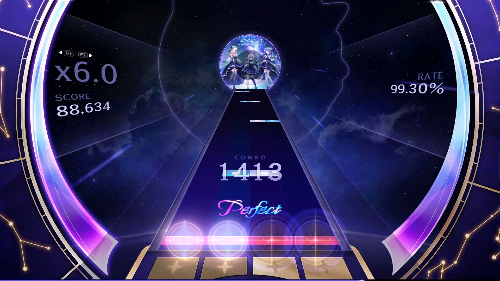

KALPA: Cosmic Symphony was one of those games I stumbled across without much expectation, and it ended up being one of the more memorable rhythm games I have played on PC. There is a certain quality to it that is hard to describe immediately, but the more time I spent with it, the more I appreciated what it was trying to do differently from everything else in the genre.
The gameplay in KALPA: Cosmic Symphony uses an arc-style note system where notes travel along curved paths toward a point on the screen. You tap, hold, or slide along these arcs at the right moment to match the rhythm. Coming from games with straight note lanes, it took me a little while to get used to the curved patterns, and I will admit my first few sessions were pretty rough. But once I adjusted, it started to feel genuinely satisfying. Landing a long combo on one of the more complex charts feels different here compared to other rhythm games, and I mean that in a good way.
The atmosphere is probably what sets KALPA: Cosmic Symphony apart the most. The whole game has a dark, space-themed aesthetic with deep backgrounds, glowing note effects, and a visual presentation that feels intentional rather than just decorative. It does not try to be flashy or cute. Instead it goes for something more cinematic and focused, and it pulls it off well. Playing it at night with headphones on is genuinely a great experience.
